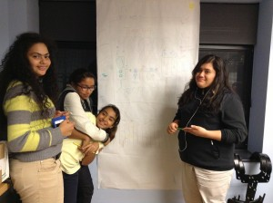
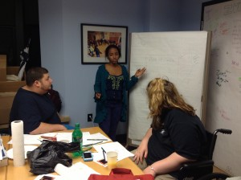

Hello,
Our final case study can be found here.
Thanks for an awesome class!
Most of the feedback we received about our presentation was positive, so we feel like we are on the right track. Most of the work that remains to be done is actually building the physical radio and evaluating/testing our work.
This week, Carrie made a small cardboard model of the design that can be used as a precise basis for laser cutting the acrylic casing. Below are images of her design. However, before we can actually build the physical product, we need to decide on a final design or designs.
We have also purchased a smart internet radio from Amazon and we are working on having it stream ZUMIX radio. We are currently have some technological issues regarding this aspect, but it should work in theory and we will hopefully solve this problem.
It has been hard getting everyone together during the week, so we plan on meeting after class tomorrow to plan out the next step and finalize decisions for going forward. Stay tuned.
Following feedback from the class exercise and the first project iteration, we have decided on the some changes for our ZUMIX radio project.
On the technical side, we have decided to purchase a smart radio that comes with the capability to stream internet radio instead of building our own with a raspberry pi. This will save us a lot of time not reinventing the wheel and will be more maintainable once we hand off the project. Originally, we discussed using a 3D printer to print out the final product, but since it is hard to get access to one, we have now decided to laser cut acrylic(hard clear plastic) sheets and piece it together.
At the last design workshop, the youth DJs came up with a few models for how the outward appearance of the radio should look. Going forward, we will choose one of them for laser cutting so that we will have a solid outer casing that the youth can then decorate. We will put our smart radio inside the casing and attach speakers for the final product.Carrie researched some of the qualities and specs we want in a speaker and have come up with 3 candidate choices. The research on speakers is found here.
Last class, someone had suggested that we put a phone next to our radio so people can call in and put in song requests. We thought that was a cool idea and would address some of the social impact challenges we had regarding this project. In particular, one concern we had after the FAIL workshop was that this project would get neglected, so the phone is a good idea for making it more interactive and interesting.
Our presentation is a work in progress and can be viewed here.
Reflections on First Project Iteration
Our radio playhouse project can be divided into two parallel components: the electronics and the outward appearance. In our proposal, we decided that the outward looks of the radio should be designed collaboratively with the youth and possibly staff of Zumix since they will be impacted the most. We are beginning to plan a workshop for designing the outward appearance of the radio with members of ZUMIX. Then, we will hold additional workshops for building the shell.
The electronics of the radio is mostly a fun technical project. We took the initial technical designs that we created for the proposal and added more details to them, based on the feedback that we got. In this first iteration, we mainly experimented and researched possible softwares to use. We hacked on the raspberry pi and built a small demo of how music would be played via the pi. One of the suggestions from the proposal feedback was to document our build process, so we decided to make a video to demo what we have so far. We think a video and photo format would be a great way to document our build process so that other people who are interested in making a cheap modern radio can easily follow what we do. Once we order the sensors, we will be able to start attaching the hardware to the radio. All the code that we write will be open source, and we will have careful instructions for software installations, so that it easy for others to do it themselves.
Below is a video of our proof of concept demo!
http://www.youtube.com/watch?v=JWJgufdtFG8
Updated technical design can be found here.
We are meeting tomorrow after class to confirm the details of our proposal and see if changes are needed based on the feedback.
Over the last two weeks, the ZUMIX Radio team has been developing and honing our potential project ideas and the processes by which we’ll design and build the chosen project. After the brainstorming workshop with the ZUMIX DJs, team members took on various aspects of the ideas the youth generated to do some feasibility research. We considered our budgetary, space, and time constraints, as well as our pool of shared resources to determine what we’d be able to accomplish.
We started with three idea groups:
Portable storytelling booth
Old-time radio
Both!
While we were all excited about the idea of building a portable storytelling booth, as we did more research, we began to think that it might be beyond the scope of both our class and ZUMIX Radio’s capacity to tackle at the moment. ZUMIX Radio hopes to work on it in the future, potentially in future Co-design studios.
In the same “let’s be realistic about what we can do” vein, the “both” option was shelved, as well.
We’re now focusing on the “old-time radio” idea. That being said, our conception of it has changed since our first few brainstorming sessions. The whole point of the point of the project is to get ZUMIX Radio more integrated in the larger ZUMIX organization and to attract more youth to the ZUMIX Radio, both as listeners and participants. Coupled with the fact that the brainstorming workshop was such a success, we’re now stepping back from our initial “old-time radio” idea and instead looking toward the youth and staff for design ideas. We’ll hold design workshops with both groups or in a single mixed group. We’ll also engage the youth in the building of radio. We hope this to be a mutually beneficial experience with all participants – staff, youth, and MIT students – broadening their perspectives and learning new skills.
The process of developing the MOU and proposal was challenging and thought-provoking. We were forced to think about not only what was feasible, but also to think critically and openly about the planning, decision-making, and implementation processes that this project entails. Who gets to decide which project we choose? Who participates in designing and building the final product. Ultimately, the choice is ours. This seems like a central lesson that this course is trying to convey. We’re in the position to choose who participates and who doesn’t. This gives us power. This may not be our preferred set of circumstances (indeed we may be actively working to overturn it), but given that it’s the ones we’re in, we have to choose how we work within it. Collaboratively, from the top-down, or somewhere in between.
You can find our Project Proposal and MOU here.
The hardware design and software design are linked as well.
The Zumix team is meeting tomorrow to discuss and finalize our project idea. In the mean time, a rough rough draft of our proposal can be found here.
Video of the workshop!
This week on Monday night, the Zumix Team conducted a design/brainstorm workshop with the youth DJs at their monthly meeting. We felt that this workshop was very important as part of the collaborative process because we wanted the DJs to be able to give input on the potential projects since they are the ones most involved with the radio program at Zumix. We hoped to use this opportunity to not only to brainstorm but also to engage the DJs so that they will be more excited about the project.
The workshop had a great turnout, with 10 people attending, not including the Zumix team. The DJs who attended ranged from 4th graders to high school juniors. After a few minutes of quick introductions, we presented the ideas that we had thought of prior: storytelling booth, old fashioned radio playhouse, general marketing/publicity things. After we presented, we opened it up to the kids to have them give input. They were generally favorable of the ideas and gave ideas for publicity schemes such as giving away free guitar picks or getting sponsors from the local network. After the ideation phase, we broke up everyone into groups of 3-4 and had each group draw what they want the project to look like. They came up with the following creative ideas!
Group 1:

This group combined the storybooth and old fashioned into one idea where there is a storybooth with a radio inside. They thought about putting the contraption in very visible places such as the state center or in front of the T station so that it can attract many people. People who come up to the booth would be able to share stories using the microphone. There could also be remote broadcast and music playing.
Group 2:

The second group came up with a bunch of ideas for marketing and publicity strategies for Zumix radio. These include putting Zumix in bigger news outlets such as the Boston Herald and in the local TV station in the community and having Zumix movie nights. They also came up with ideas for publicity materials such as passing out keychains and creating a promotional DVD to hand out to different organizations and networks.
Group 3:

The third group thought of a box of Zumix idea that, as one DJ put it, “kind of like a jack in the box but without the thing popping out.” It is a box shaped storytelling booth. When people go inside, they would be able to see their reflection, to emphasize that they are telling their own stories. They can also choose what song to listen to as they tell their story. The 4 outside walls of the box will be decorated with an artist statement, directions, mission statement, and hand prints. There can also be speakers outside for playing music to attract visitors.
At the end of the drawing activities, everyone was very excited to get started on the projects. There was talk to maybe combine the three main ideas into one project, but we would need to more research on how feasible that would be. A big concern that we have is portability. The next steps are to decide on a final project and make plans to implement it.
Our MOU is found here.
Hello everyone!
My name is Qian, a senior in course 6-3 (Computer Science). My CS interests lie in systems and AI, and I have experience with web and mobile app development. I am hoping I will be able to apply my skills in this class. I am looking forward to working with community partners this semester to design something that will be beneficial. I am also looking forward to working with a diverse team with people across all majors because that is not something I get to do often in my course 6 classes.
{kind=link}
{kind=link}
{kind=link}